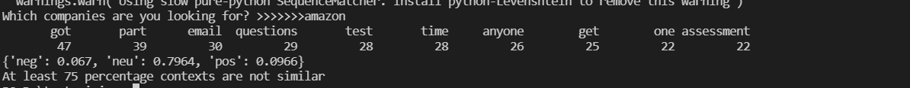

Set up the font size of text here
Current font size:
Python Text Mining Writeup and Reflection
Project Overview
The purpose of this project is to analyze the content of the software engineering developer internship Online assessment posted on Reddit. Those contexts are from the 'csMajors' field and based on which specific companies the user is looking for. The data source was provided by the praw library and the analyst tools were based on nltk the fuzzz packages. Two techniques I used to analyze are text similarity and sentiment analysis.
Implementation
By using the search function, this project can locate the specific company’s OA posted on Reddit. However, it is annoying after you collect a bunch of text from Reddit since it includes too much unnecessary information that will distribute the analysis process. Therefore, I use the stopwords package to remove the stopwords in the content I collected. When I was separating the text into words, I used the word_tokenize function in nltk package since it can find the words and punctuation in a string.
Also, when I was calculating the sentiment score, I did not compute the whole text since it is from 100 different posts. What I did is calculate the sentiment score of each post and calculate the total average, which is more accurate.
Result
Here is an example of using this project. After typing in “amazon” as input, the program will first return the top 10 most frequent words in the content. However, it just provides a basic view of the overall text. The dictionary points out an average number of negative, neutral, and positive sentiments based on calculations of nltk.SentimentIntensityAnalyzer.
The last line is the result of text similarity. It will calculate the similarity between each post. If the similarity score is less than 75%, the program will count it as irrelevant. If 75% of the score is irrelevant, the program will return “At least 75 percentage contents are not similar”. The user can based on the most frequent word to see what Reddit users talk most in each post for the internship and the sentiment score can reflect the level of OA of each company.
Reflection
In this project, what I learn most is how to read the documents and set up the configuration by myself. It takes me a lot of time to do the configuration. The best way is to follow the steps on the document. It is really helpful. In my project, the data source mining and analysis process went well but I realize I can improve more in the analyzing part. I was planning to do the text clustering but it takes me a lot of time to understand the model. I wish I can start earlier to learn more about the modeling of clustering. Even though I did have experience on using python to do k-means clustering before, I still have no idea about how to deal with text clustering. This could be a goal for me if I can do this project again.